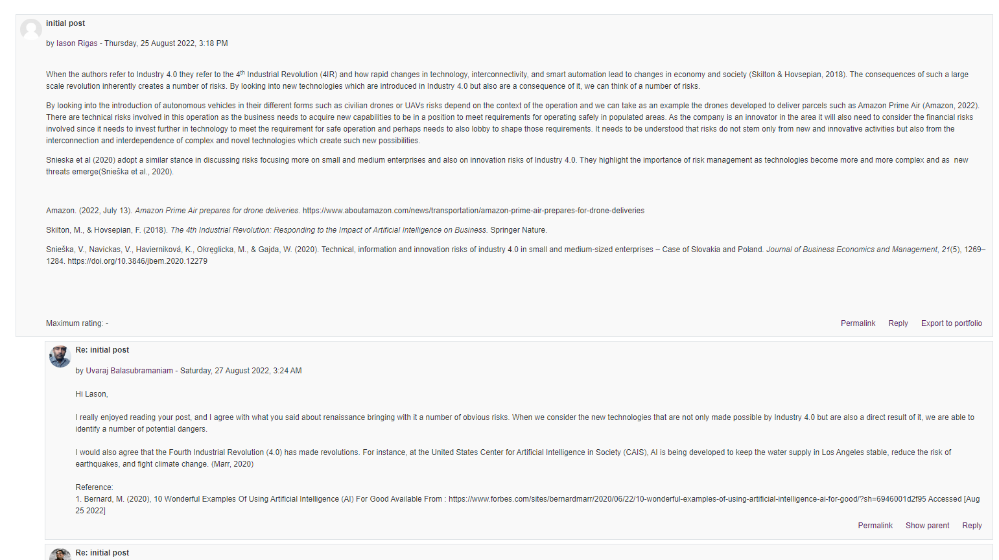
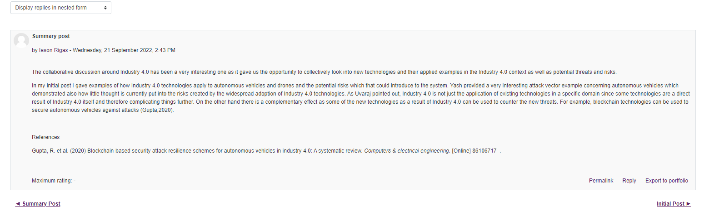
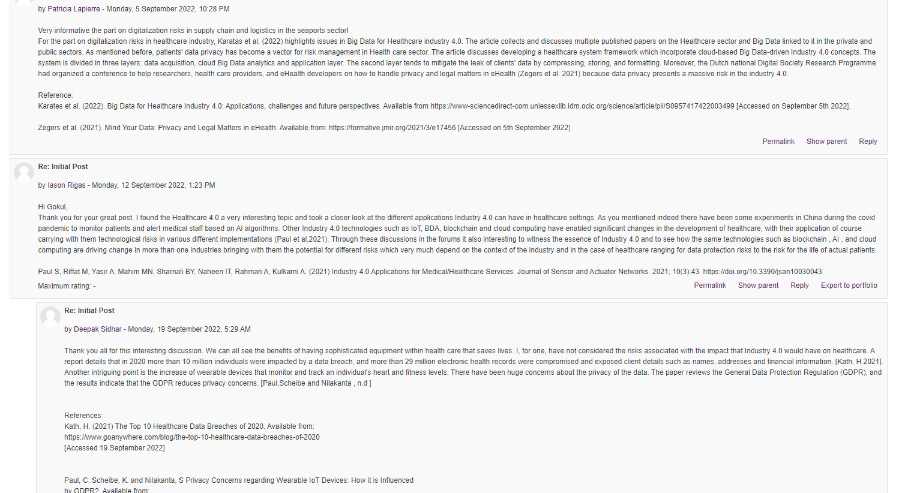

In unit 1 the discussion revolved around the case study of Kovaite and Stankevičienė on industry 4.0. The collaboration discussion was about discussing the Industry 4.0 by giving examples of Industry 4.0 applications and discussing the points in the case study. In my initial post i concentrated on examples of industry 4.0 applications from the autonomous vehicle industry and the usage of drones and UAVs in commercial applications and the potential risks which they might bring into the cyber security landscape.
Fellow classmates supplemented my post with similar points on
self-driving vehicles and very interesting references to attack vectors
which have been identified in the past. As
colleagues pointed out, Industry 4.0 technologies can introduce new
risks to our existing systems but at the same time they bring with them
new technologies which can mitigate those risks in novel ways. For
me Industry 4.0 was a new concept and although I have read about
different technologies I was not aware that there is an umbrella term
which actually includes them. Reflecting on unit 1 I would have liked
to have more time to read more sources on Industry 4.0 and explore more
material from posts made by fellow students. Unfortunatelly this was
not possible as due to a family emergency I was forced to start the
unit quite late and then I had to move on to the next unit.
Some of the artefacts are reproduced below:


